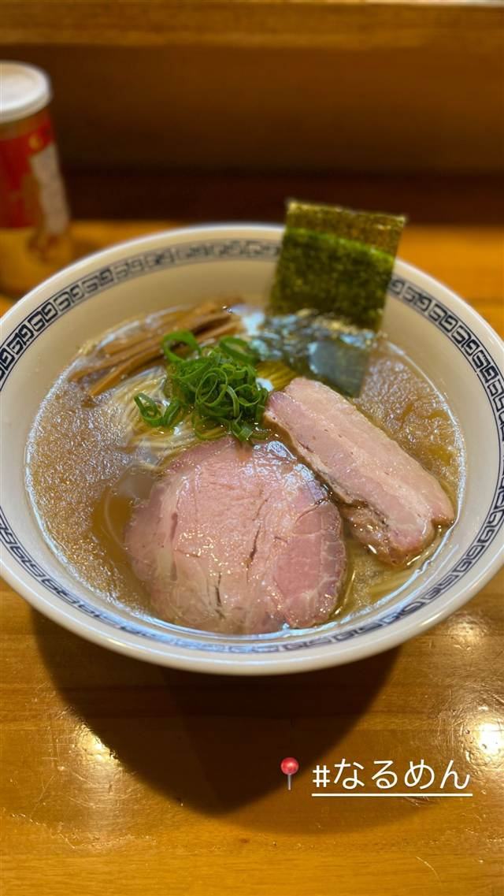
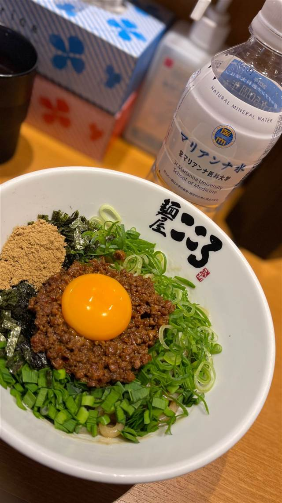
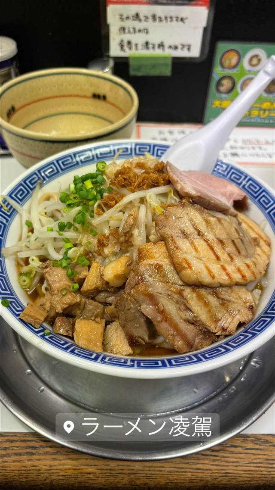

BY TOWN
大岡山4店
-

醤油・中華そば 大岡山 なるめん 2階で手もみして仕上げる自家製麺の豚骨魚介ラーメン 昼 ¥1,000～¥1,999 夜 ¥1,000～¥1,999 -

まぜそば・油そば 大岡山 麺屋 こころ 大岡山本店 昼 ¥1,000～¥1,999 夜 ¥1,000～¥1,999 -
 家系 北千束駅／大岡山駅
大輝家直系横浜家系ラーメン 大元家
横浜家系の直系店で楽しむライス食べ放題の家系ラーメン
昼 ¥1,000～¥1,999 夜 ¥1,000～¥1,999
家系 北千束駅／大岡山駅
大輝家直系横浜家系ラーメン 大元家
横浜家系の直系店で楽しむライス食べ放題の家系ラーメン
昼 ¥1,000～¥1,999 夜 ¥1,000～¥1,999
-

ラーメン 大岡山 らーめん凌駕 大勝軒の系譜を汲みながら二郎系を掲げる異色の一杯 昼 ¥1,000～¥1,999 夜 ¥1,000～¥1,999